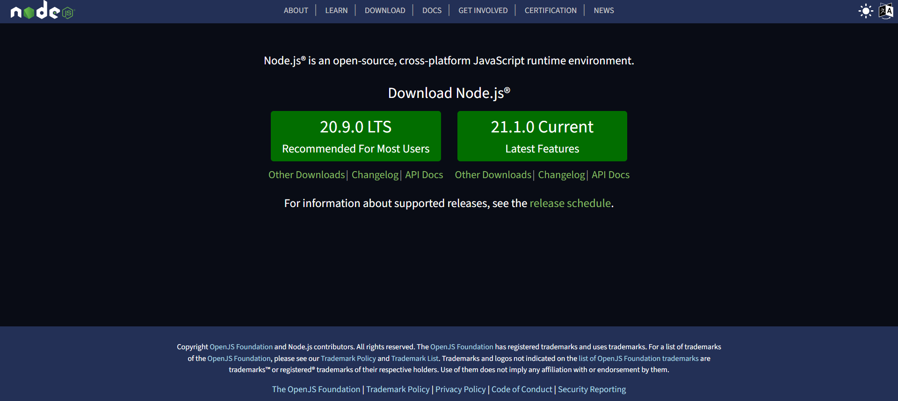

React JS
Setup
Download Node.js®, go to the following website:
https://nodejs.org/en

npx create-next-app@latest my-app OR ./
I. Components
- React apps are made out of components. A component is a piece of the UI (user interface) that has its own logic and appearance.
- React component names must always start with a capital letter, while HTML tags must be lowercase.
- React components are JavaScript functions that return markup, called JSX.
- JSX is stricter than HTML. You have to close tags like <br />. Your component also can't return multiple JSX tags. You have to wrap them into a shared parent, like a <div>...</div> or an empty <>...</> wrapper.
- JSX lets you put markup into JavaScript. Curly braces let you “escape back” into JavaScript so that you can embed some variable from your code and display it to the user.
- In React, you specify a CSS class with className.
- The export default keywords specify the main component in the file.
- The export default prefix is a standard JavaScript syntax (not specific to React). It lets you mark the main function in a file so that you can later import it from other files.
- If your markup isn't all on the same line as the return keyword, you must wrap it in a pair of parentheses.
I.1 Importing and Exporting Components
- There are two primary ways to export values with JavaScript: default exports and named exports. You can use one or both of them in the same file. A file can have no more than one default export, but it can have as many named exports as you like.
- When you write a default import, you can put any name you want after import. In contrast, with named imports, the name has to match on both sides. That's why they are called named imports!
| Syntax | Export statement | Import statement |
|---|---|---|
| Default | export default function Button() {}
|
import Button from './Button.js';
|
| Named | export function Button() {}
|
import { Button } from './Button.js';
|
I.2 Writing Markup with JSX
- JSX is a syntax extension for JavaScript that lets you write HTML-like markup inside a JavaScript file.
- Return a single root element: to return multiple elements from a component, wrap them with a single parent tag. For example, you can wrap them with a <div>... </div> or an empty <>...</> wrapper. This empty tag is called a Fragment.
- Close all the tags: even self-closing tags like <img> must become <img />.
- camelCase all most of the things! JSX turns into JavaScript and attributes written in JSX become keys of JavaScript objects.
I.3 Passing Props to a Component
- React components use props to communicate with each other. Every parent component can pass some information to its child components by giving them props.
- You can read these props by listing their names separated by the commas inside ({ and }) directly after the function name.
- props are the only argument to your component! React component functions accept a single argument, a props object.
- Specifying a default value for a prop: function My_fun({ ..., name = "Karim" }) {/*...*/ }
- Props are not always static. A component may receive different props over time.
- However, props are immutable. When a component needs to change its props, it will have to “ask” its parent component to pass it different props—a new object! Its old props will then be cast aside, and eventually the JavaScript engine will reclaim the memory taken by them.
I.4 Conditional Rendering
- In React, you can conditionally render JSX using JavaScript syntax like if statements, &&, and ? : operators. For instance, if (Condition){ return <h1>Some text</h1>}
- Conditionally returning nothing with null. For instance, if (Condition){ return null;}. In practice, returning null from a component isn't common.It is better to conditionally include or exclude the component in the parent component's JSX.
- Ternary operator: return( <p>{ Condition ? <h1>Some text</h1> : <h4>Some other text</h4>}</p>);
- Logical AND operator (&&): to render some JSX when the condition is true, or render nothing otherwise. For instance, return( <p>{ Condition && <h1>Some text</h1>}</p>);. A JavaScript && expression returns the value of its right side (in our case, the checkmark) if the left side (our condition) is true. But if the condition is false, the whole expression becomes false. Don't put numbers on the left side of &&. React will render 0 as zero rather than false.
II. Events, States, and rendering
- React lets you add event handlers to your JSX.
- To add an event handler, you will first define a function and then pass it as a prop to the appropriate JSX tag.
export default function Button() {
function handleClick() {
alert('You clicked me!');
}
return <button onClick={handleClick}> Click me </button>
}
OR
<button onClick={function handleClick() { alert('You clicked me!'); }}> Click me </button>
OR
<button onClick={() => { alert('You clicked me!'); }}> Click me </button>
function handleClick() {
alert('You clicked me!');
}
return <button onClick={handleClick}> Click me </button>
}
OR
<button onClick={function handleClick() { alert('You clicked me!'); }}> Click me </button>
OR
<button onClick={() => { alert('You clicked me!'); }}> Click me </button>
II.1 States
- In React, data that changes over time is called state. You can add state to any component, and update it as needed.
- You can add state to a component with a useState Hook. Hooks are special functions that let your components use React features (state is one of those features). The useState Hook lets you declare a state variable. It takes the initial state and returns a pair of values: the current state, and a state setter function that lets you update it.
- When you call useState, you are telling React that you want this component to remember something.
- Your component renders the first time. Because you passed 0 to useState as the initial value for index, it will return [0, setIndex]. React remembers 0 is the latest state value.
- You update the state. When a user clicks the button, it calls setIndex(index + 1). index is 0, so it's setIndex(1). This tells React to remember index is 1 now and triggers another render.
- Your component's second render. React still sees useState(0), but because React remembers that you set index to 1, it returns [1, setIndex] instead.
- And so on!
- You can have as many state variables of as many types as you like in one component.
- State is local to a component instance on the screen. In other words, if you render the same component twice, each copy will have completely isolated state! Changing one of them will not affect the other.
import { useState } from 'react';
...
export default function My_Component() {
const [index, setIndex] = useState(0);
...
function handleClick() {
...
setIndex(index + 1);
}
...
}
...
export default function My_Component() {
const [index, setIndex] = useState(0);
...
function handleClick() {
...
setIndex(index + 1);
}
...
}
II.2 Render and commit
- Before your components are displayed on the screen, they must be rendered by React. “Rendering” is React calling your components.
- This process of requesting and serving UI has three steps:
- Triggering a render: There are two reasons for a component to render:
- It's the component's initial render.
- The component's (or one of its ancestors') state has been updated: Once the component has been initially rendered, you can trigger further renders by updating its state with the set function. Updating your component's state automatically queues a render.
- Rendering the component: After you trigger a render, React calls your components to figure out what to
display on screen.
- On initial render, React will call the root component (create the DOM nodes).
- For subsequent renders, React will call the function component whose state update triggered the render.
- Committing to the DOM: After rendering (calling) your components, React will modify the DOM.
- For the initial render, React will use the appendChild() DOM API to put all the DOM nodes it has created on screen.
- For re-renders, React will apply the minimal necessary operations (calculated while rendering!) to make the DOM match the latest rendering output.
- Triggering a render: There are two reasons for a component to render:
III. Hooks
- You can either use the built-in Hooks or combine them to build your own.
III.1 State Hooks
To add state to a component, use one of these Hooks:
- useState: declares a state variable that you can update directly.
- useReducer: declares a state variable with the update logic inside a reducer function.
import { useReducer } from 'react';
const initialState = {
isRunning: false,
time: 0
};
function reducer(state, action) {
switch (action.type) {
case 'start':
return { ...state, isRunning: true };
case 'stop':
return { ...state, isRunning: false };
case 'reset':
return { isRunning: false, time: 0 };
case 'tick':
return { ...state, time: state.time + 1 };
default:
throw new Error();
}
}
<button onClick={()=> dispatch({ type: 'start' })}> Start </button>
<button onClick={()=> dispatch({ type: 'stop' })}> Stop </button>
<button onClick={()=> dispatch({ type: 'reset' })}> Reset </button>
const initialState = {
isRunning: false,
time: 0
};
function reducer(state, action) {
switch (action.type) {
case 'start':
return { ...state, isRunning: true };
case 'stop':
return { ...state, isRunning: false };
case 'reset':
return { isRunning: false, time: 0 };
case 'tick':
return { ...state, time: state.time + 1 };
default:
throw new Error();
}
}
<button onClick={()=> dispatch({ type: 'start' })}> Start </button>
<button onClick={()=> dispatch({ type: 'stop' })}> Stop </button>
<button onClick={()=> dispatch({ type: 'reset' })}> Reset </button>
III.3 Effect Hooks
- useEffect: fires each time we re-render.
- useEffect(setup, dependencies?)
function Timer() {
const [count, setCount] = useState(0);
useEffect(() => {
setTimeout(() => {
setCount((count) => count + 1); }, 1000); });
return <h1>I have rendered {count} times!</h1>;
}
Example
const [count, setCount] = useState(0);
useEffect(() => {
setTimeout(() => {
setCount((count) => count + 1); }, 1000); });
return <h1>I have rendered {count} times!</h1>;
}
Example
III.4 Ref Hooks
- useRef: declares a ref. You can hold any value in it, but most often it's used to hold a DOM node.
- useImperativeHandle: lets you customize the ref exposed by your component. This is rarely used.
function InputFocus() {
const inputRef = useRef();
useEffect(() => { inputRef.current.focus(); }, []);
return ( <input ref={inputRef} type="text" /> ); }
const inputRef = useRef();
useEffect(() => { inputRef.current.focus(); }, []);
return ( <input ref={inputRef} type="text" /> ); }